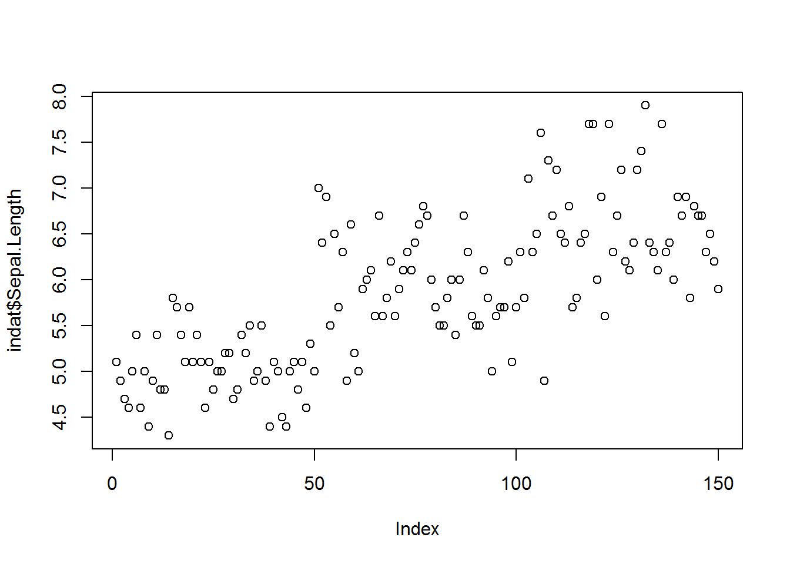
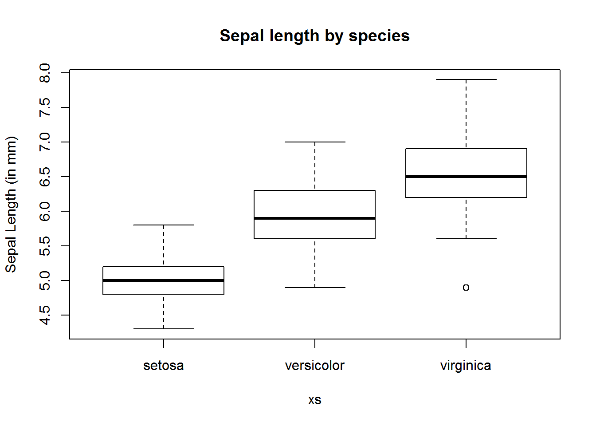
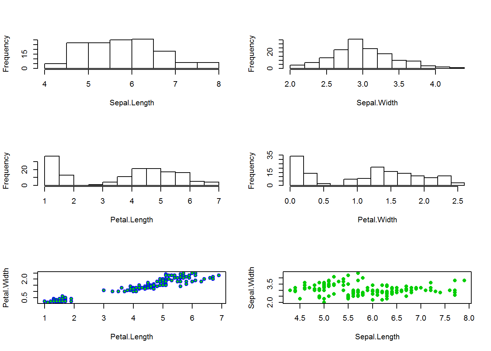
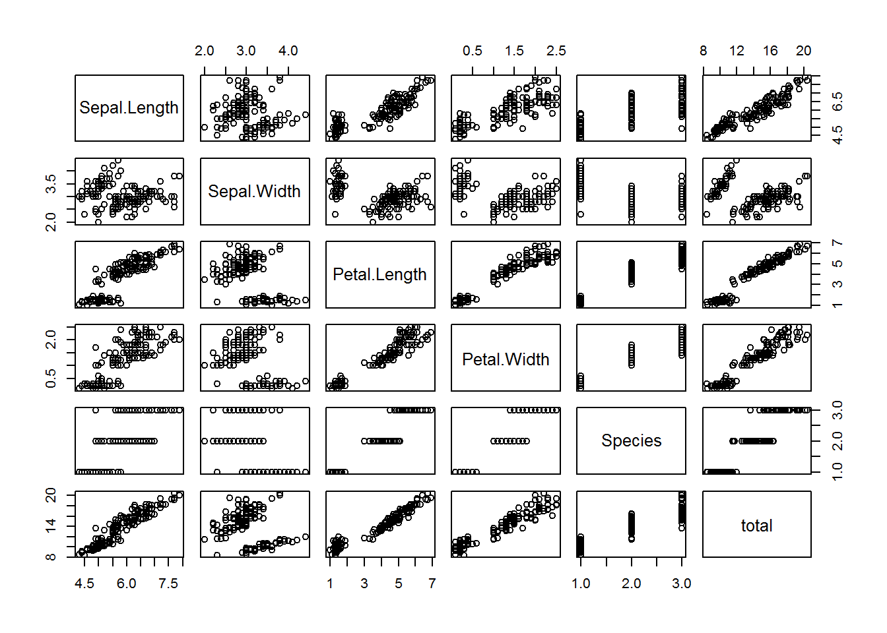

1 A hands on introduction to R tutorial
prepared by Tiago A. Marques, Danielle Harris & Len Thomas
1.1 Introduction
This tutorial was created as a gentle introduction to the R environment. It does not assume any basic knowledge about R, but some basic programming notions would be desirable.
There is an extensive community revolving around R, and abundant courses, tutorials, books, blogs, list servers, etc, freely available online. We provide here a small list of some of these:
- R webpage - the main R webpage, including links to downloading R, manuals, tutorials, dedicated search engines, etc.
- R video tutorials - video how to’s in R
- Online tutorial - a course with interactive exercises
- Online course - DataCamp commercial site
- Reference card - A very handy list of useful R functions
- Short reference card - A longer reference card with most commonly used R functions
To facilitate the interaction with R we leverage on RStudio, a piece of software which allows users to have at a click’s distance many useful features in R. In the following sections of the tutorial you will be guided through a first session of R via RStudio.
The tutorial is intended to follow a brief presentation about R and RStudio, their interaction and capabilities. It assumes that R and RStudio have been previously installed in the computer you are using. The latest version of both software packages is recommended. Both are free and open source.
1.2 Introduction to RStudio
Most users (except perhaps die-hard command line users) will use some sort of graphical user interface (GUI) to R. While the basic R installation comes with a simple GUI, here we adopt the use of RStudio, which considerably facilitates an introduction to R by providing many shortcuts and convenient features which we introduce next.
A major advantage of RStudio is that it makes it easy for you to type your R code into a script window, which you can easily save, and then send individual lines or blocks of code to the R command line to be acted upon. This way, you have a record of what you have done, in the saved script file, and can easily reproduce it any time you like. We strongly recommend that you save your code script.
Given RStudio has been installed, when you double-click on a R workspace it should open in RStudio1. After the presentation on R and RStudio you just sat through, from within RStudio you should be able to know where to find:
- the command line (bottom left pane2)
- the code scripts (top left pane)
- the workspace objects (top right pane)
- the loaded packages and how to load them (bottom right pane)
- the created plots (bottom right pane)
- the help files (bottom right pane)
- a file navigator system akin to windows explorer (bottom right pane)
Note that you can customize the aspect of RStudio (e.g. font size and colours of the smart syntax highlighting scheme) via Tools|Global options.
A very handy feature of RStudio is that you can preview the possible arguments of functions, as well as their description, directly when you are inserting the code. Let’s try doing that. Type say seq() in the command line or the script window and then place the cursor between the parenthesis and press the Tab key… Is this a nice feature or what?
Now we have met RStudio and we know how it can make our life simpler, let’s move on.
1.3 A first session in RStudio
We have provided a R workspace named tutorial.Rdata. Open RStudio and then open it by selecting File|Open File. We recommend that you begin by creating a script file (Ctrl+Shift+N, RStudio Shortcut) and use that to save and comment all your code that will be executed during the tutorial. In this way you will have a record of everything you did.
You know that R is ready to receive a command when you see the R prompt on the command line (on the bottom left tab by default in RStudio): “>”. If you type a line of code that is not complete, R presents the “+” character, so that the user knows it expects the conclusion of the current line. Important note: while the prompt “>” and “+” will be shown in this tutorial’s code, you should not try to add either “>” nor “+” to the command line: this is something that R does for you and will complain if you try to do it yourself!3
On the top right corner tab, where objects available in the Environment are listed, you can see that in tutorial.Rdata there are only two example objects. These are x1 and obj2. We can print an object to the screen by simply typing its name and press enter (despite the fact that currently you can actually see the values on these objects Environment tab - but that is because they are simple objects and the workspace is almost empty. )
R is a very powerful calculator! Try some simple maths, say for example (you need to press enter after each line so that the line is evaluated)
4+3## [1] 7log(8)## [1] 2.079442sin(pi)## [1] 1.224606e-16Tip: There is actually a simpler way to do sourcing from the script file in RStudio. CTRL-Enter is a keyboard shortcut for “source the current line of code in my script file and move the cursor to the next line”. In general if you like keyboard shortcuts, look in RStudio under the menu ``Help | Keyboard shortcuts“.
At the moment your workspace is almost empty, but we can change that easily by creating new objects. We will create a variable called myvar1 which we will assign the value of 4. This is typically done using the assign operator <-.
myvar1 <- 4There are typically multiple ways to do the same thing in R, and this is sometimes referred to as a disadvantage. For simplicity, we deliberately avoid presenting the several alternatives for each action, and concentrate on the ones we prefer. This is not the same as saying these are the best, and if you continue to work with R you will likely get used to doing things your way - for now we do it our way!
An object should have been created in your workspace. You can list all objects in a given workspace using
ls()## [1] "myvar1" "obj2" "pdf" "x1"You can also remove any object by using the rm function, so here we remove myvar1, x1 and obj2
rm(myvar1,x1,obj2)and hence our workspace is empty again. Note the difference between ls() and rm(). While the first function does not need any arguments, the second requires at least one argument (but can take several). This can be easily seen by checking their help files and noting that rm() needs at least 1 explicit argument while ls() can work with defaults.
?rmThis is a convenient way to obtain more information about a given function. If one does not know what the name of the function might be, one can search for functions containing a given string. The following command lists all the functions with the string “mean” in them.
apropos("mean")## [1] ".colMeans" ".rowMeans" "colMeans" "kmeans"
## [5] "mean" "mean.Date" "mean.default" "mean.difftime"
## [9] "mean.POSIXct" "mean.POSIXlt" "rowMeans" "weighted.mean"Not surprisingly, most if not all of these functions will be used for some kind of mean calculation. You can look into any one of them using the ? as above. We have assigned a number to a variable , but we can actually more generally have vectors (strictly, myvar1 was a numeric vector of length 1) containing variables. The following code assigns some numbers to 3 different vectors.
x2 <- c(1,2,0.12,4,-22)
x3 <- seq(1,8,by=2)
#and a useful shortcut for sequences with the by argument = 1
x1 <- 1:5The function seq is very useful for setting sequences of numbers. The optional arguments length.out and along.with provides extra flexibility.
x1## [1] 1 2 3 4 5We can use the usual mathematical operators over vectors. A few examples follow:
x1 + x2## [1] 2.00 4.00 3.12 8.00 -17.00x4 <- x1 + x2
x5 <- x1 - x2
x6 <- x1 * x2
x7 <- x1 / x2
x4## [1] 2.00 4.00 3.12 8.00 -17.00x5## [1] 0.00 0.00 2.88 0.00 27.00x6## [1] 1.00 4.00 0.36 16.00 -110.00x7## [1] 1.0000000 1.0000000 25.0000000 1.0000000 -0.2272727Note that if the vectors are of the same length, R performs the operation element-wise. Another useful feature is that R recycles vectors if they are not the same length
x8 <- c(1,2,3,4)
x8 + 2## [1] 3 4 5 6However, if one of the vectors is smaller, unexpected behaviour can happen, because R recycles elements regardless (so be careful, a warning is typically produced)
x9 <- c(3,4,5)
x10 <- c(0.7,0.9,1.3)
x9 + x10## [1] 3.7 4.9 6.3x8 + x9## Warning in x8 + x9: longer object length is not a multiple of shorter
## object length## [1] 4 6 8 7Notice that a warning message was produced when x8 and x9 were added. Usually these messages are important and should be read! Quite often the answer to your current question lies in the previous error or warning message.
Another useful function is rep, which allows one to create repetitions of patterns. As examples, see the difference between the next two lines of code
rep(c(1,2,3,4), times=3)## [1] 1 2 3 4 1 2 3 4 1 2 3 4rep(c(1,2,3,4), each=3)## [1] 1 1 1 2 2 2 3 3 3 4 4 4It is now time to end our first R session. At this point you need to decide what to do, as all objects created so far are in the memory, but this will be wiped out unless we explicitly save it to a file. The easiest way to do so is by calling the save.image() function.
save.image(file="my1stR.Rdata")Note the unusual extension name .Rdata associated with R workspaces (an R file is called a workspace). We could now load up this workspace in a new R session, or typically we will load up that workspace by starting R by double clicking on the file created. Do this to see that you retrieve the above created objects. Note that if you already have an R session open, you can load up any previously saved workspace via function load().
Note that you have saved your workspace in some directory but you have not defined it. By default, this is your working directory. You can check what that directory currently is by using the following command
getwd()You can always change the directory you are working on by setting it up explicitly to your desired location, using
#set the working directory - but remember to use your own path!!!
setwd("C:/Users/myusername/Desktop/mycourse")
#note how you can write comments in R by using "#"
#anything in front of # is not interpreted by R
#and treated as a comment
#you should have the good habit of extensively commenting
#all your code so that you know what you've done
#when you return to it even months or years laterWe have just started R, created and removed some objects, and used simple functions like ls(), seq() or save(). R is an object oriented language, and functions and vectors are just examples of types of objects available in R. In Section 1.4 we go through the most common objects in R.
1.4 Types and classes of objects
Objects can have classes, which allow functions to interact with them. Objects can be of several classes. We already used the class numeric, which is used for general numbers, but there are also additional very commonly used classes
integer, for integer numberscharacter, just for character stringsfactor, used to represent levels of a categorical variablelogical, the values TRUE and FALSE
While many others exist, these are the more commonly used. Outputs of some analyses have special classes, as an example, the output of a call of function lm() is an object of class lm, i.e., a linear model. Typically, functions behave differently according to the class of an object. As an example, note how summary() treats differently an object of class factor or one of class numeric, producing a table of counts per level for a factor but a 6 number summary for numeric values.
obj1 <- factor(c(rep("a",12), rep("b",4), rep("c",2)))
summary(obj1)## a b c
## 12 4 2obj2 <- c(2,5,-0.2,89,12,-3,-5.4)
summary(obj2)## Min. 1st Qu. Median Mean 3rd Qu. Max.
## -5.4 -1.6 2.0 14.2 8.5 89.0We can check the class of an object using function class, as in the following examples
class(obj1)## [1] "factor"class(obj2)## [1] "numeric"class(TRUE)## [1] "logical"It is sometimes useful to coerce objects into different classes, but care should be used when doing so. Some examples are presented below. Can you describe in your own words what R did below?
as.integer(c(3,-0.3,0.4,0.6,0.9,13.2,12))## [1] 3 0 0 0 0 13 12as.numeric(c(TRUE,FALSE,TRUE))## [1] 1 0 1as.numeric(obj1)## [1] 1 1 1 1 1 1 1 1 1 1 1 1 2 2 2 2 3 3A common way to organize multiple vectors together is in the form of a matrix. Here we create such an object
mat1 <- matrix(1:12, nrow=3, ncol=4)
mat1## [,1] [,2] [,3] [,4]
## [1,] 1 4 7 10
## [2,] 2 5 8 11
## [3,] 3 6 9 12Note that by default R fills the first column (with 1,2,3) then the second column (4,5,6) etc. If you want it to fill the first row, then the second, you can use the optional argument byrow=TRUE, like this:
matrix(1:12, nrow=3, ncol=4, byrow=TRUE)## [,1] [,2] [,3] [,4]
## [1,] 1 2 3 4
## [2,] 5 6 7 8
## [3,] 9 10 11 12R also allows data structures with more than 2 dimensions – we don’t cover those here, but look up the help on array if you’re interested. A matrix is just a two dimensional array.
Arrays are useful objects, but can be complex to visualize due to their potential high dimensionality. Another common type of object is a data.frame. This is essentially a matrix but for which each column can be of a different type. These are what we would typically associate with an excel spreadsheet or a table in a database. Typically columns correspond to variables observed in a number of subjects, each subject recorded in its own row. A simple example with 3 variables and 5 subjects follows:
mysex <- c("male","female","female","male","male")
myage <- c(34,23,56,45,12)
myhei <- c(185,178,167,165,148)
df1 <- data.frame(ID=1:5, sex=mysex, age=myage, height=myhei)
df1## ID sex age height
## 1 1 male 34 185
## 2 2 female 23 178
## 3 3 female 56 167
## 4 4 male 45 165
## 5 5 male 12 148Typically, data.frames are used to store the data we subsequently analyse. Usually the data are not manually imputed as above, but read into R from other software, using R functions addressed in a later section.
A data frame is just a special type of list. A list can contain objects of different types and dimensions. An example is here
list1 <- list(Note="whatever I want here", X2=4, age=1:4)
list1## $Note
## [1] "whatever I want here"
##
## $X2
## [1] 4
##
## $age
## [1] 1 2 3 4Lists are typically used to store outputs of computations which require different kinds of objects to be recorded. Note the use of $ to access the sub-components of a list or a data.frame.
list1$X2+10## [1] 14A final type of object which we already used are functions. While there are thousands of available functions inside R, later we will learn how to create our own functions.
1.5 Subsetting data
One useful feature of R relates to how we can index subsets of data. The indexing information is included within square brackets:[]. As an example, we can select the third element of a vector
x<-c(1,3.5,7,8,-7,0.43,-1)
x[3]## [1] 7but we can also select all except the second and third elements of the same vector
x[-c(2,3)]## [1] 1.00 8.00 -7.00 0.43 -1.00We can also select only the objects which follow a given condition, say only those that are positive
x[x>0]## [1] 1.00 3.50 7.00 8.00 0.43or those between (-1,1)
x[(x>-1) & (x<1)]## [1] 0.43Note the subtle difference between the previous and next statements
x[(x>=-1) & (x<=1)]## [1] 1.00 0.43 -1.00which reminds us we should be careful when setting these logical conditions, especially when working with integer boundaries which might be on the limits of those conditions. Note indexing can be done using additional information. As an example, we select here the elements in x such that the corresponding elements in y are positive:
#rnorm(k) produces k Gaussian random deviates
x <- rnorm(10)
y <- rnorm(10)
x2 <- x[y>0]When working on a matrix the indexing is done by row and column, therefore for selecting the value that is in the third row and second column of a matrix we use
mat1[3,2]## [1] 6but we can also select all the elements in the second row
mat1[2,]## [1] 2 5 8 11or the fourth column
mat1[,4]## [1] 10 11 121.6 Mathematical functions and simple data calculations
Within R there are a number of mathematical operators but also mathematical and statistical functions. As any other functions, many of these have required parameters and optional parameters. It would take a very long time to describe even the most basic functions. Therefore, we prefer to let you try hands on explore a number of these.
Task 1: Take your time to explore the functions below:
sum(x) |
sqrt(x) |
log(x) |
log(x,n) |
exp(x) |
choose(n,x) |
factorial(x) |
floor(x) |
ceiling(x) |
round(x,digits) |
abs(x) |
cos(x) |
sin(x) |
tan(x) |
acos(x) |
acosh(x) |
max(x) |
min(x) |
mean(x) |
median(x) |
range(x) |
var(x) |
cor(x,y) |
quantile(x) |
(Tip: do not forget that you can get a full description what each function can be used for, what arguments it takes, and what kind of output it produces, using “?”. Further, the help of most functions includes examples of their use, which proves invaluable to understand their usage.)
1.7 Importing and exporting data
Rather than importing data into R manually, typically the data we work with are imported from some external source. Typically this might be some simple file format, like a txt or a csv file, but while not covered here, direct import from say Excel files or Access data bases is possible. Such more specialized inputs often require additional packages.
RStudio includes a useful dedicated shortcut “Import dataset”, by default available through the top right window of RStudio’s interface. Note this shortcut essentially just calls the appropriate functions required for each import. Here we present a couple of examples just for practising.
First, we load up a data frame which exists in R4 and contains an example data set, with variables measured in 150 flowers of 3 varieties. This is in object iris, and we use the function data() to load it so that we have access to it.
data(iris)we can take a look at what this data set contains
# example of head use: see the first 4 rows in iris
head(iris, n=4)## Sepal.Length Sepal.Width Petal.Length Petal.Width Species
## 1 5.1 3.5 1.4 0.2 setosa
## 2 4.9 3.0 1.4 0.2 setosa
## 3 4.7 3.2 1.3 0.2 setosa
## 4 4.6 3.1 1.5 0.2 setosa# example of str use
str(iris)## 'data.frame': 150 obs. of 5 variables:
## $ Sepal.Length: num 5.1 4.9 4.7 4.6 5 5.4 4.6 5 4.4 4.9 ...
## $ Sepal.Width : num 3.5 3 3.2 3.1 3.6 3.9 3.4 3.4 2.9 3.1 ...
## $ Petal.Length: num 1.4 1.4 1.3 1.5 1.4 1.7 1.4 1.5 1.4 1.5 ...
## $ Petal.Width : num 0.2 0.2 0.2 0.2 0.2 0.4 0.3 0.2 0.2 0.1 ...
## $ Species : Factor w/ 3 levels "setosa","versicolor",..: 1 1 1 1 1 1 1 1 1 1 ...# example of summary use
summary(iris)## Sepal.Length Sepal.Width Petal.Length Petal.Width
## Min. :4.300 Min. :2.000 Min. :1.000 Min. :0.100
## 1st Qu.:5.100 1st Qu.:2.800 1st Qu.:1.600 1st Qu.:0.300
## Median :5.800 Median :3.000 Median :4.350 Median :1.300
## Mean :5.843 Mean :3.057 Mean :3.758 Mean :1.199
## 3rd Qu.:6.400 3rd Qu.:3.300 3rd Qu.:5.100 3rd Qu.:1.800
## Max. :7.900 Max. :4.400 Max. :6.900 Max. :2.500
## Species
## setosa :50
## versicolor:50
## virginica :50
##
##
## Now we create a new data frame which we then modify to include a new variable
mydata <- iris
mydata$total <- mydata$Sepal.Length + mydata$Sepal.Width + mydata$Petal.Length + mydata$Petal.WidthNow, we are going to export this data set as a txt, named mydatafile.txt
write.table(mydata, file="mydatafile.txt", row.names=FALSE)Note the use of the optional argument row.names=FALSE, otherwise some arbitrary row names would be added to the file. If you look in the folder you are working in, you should now have a new file there. Open it and check that it looks as you would expect. Next, we are going to import it back into R, into an object named indat.
indat <- read.table(file="mydatafile.txt", header=TRUE)So now we have our data back in R.
Task 2: Import the file dados1.csv into R, giving it the name newfile. Tips: Explore the possible options including 1. Import Dataset shortcut in the Environment tab, 2. the optional argument sep="," in function read.table or 3. consider using function read.csv().
1.8 Graphics
One of the most amazing R capabilities are its graphics customization properties. One can create pretty much any graphic output desirable. The plot function is, as we have seen before for function summary(), a function that attempts to do something smart depending on the type of arguments used. Using the data set iris previously considered, plot examples are implemented below, with some optional arguments being used to show some of the possibilities to customize plots.
#default use
plot(indat$Sepal.Length)
We now add some labels to a new plot of sepal length as a function of species (note the use of ~ to mean as a function of; this is also used below when specifying regression models, where the object on the left of ~ will be the response variable and the objects on the right explanatory variables)
ys <- indat$Sepal.Length
xs <- indat$Species
#note use of ~ to represent "as a function of"
plot(ys~xs, ylab="Sepal Length (in mm)", main="Sepal length by species")
We can also set the graphic window to hold multiple plots. This is obtained via argument mfrow, one of the arguments in function par.5 An example follows, in which we leverage on the use of function with to avoid having to constantly use indat$ to tell R where the data can be found.
#define two rows and 2 columns of plots
par(mfrow=c(3,2))
with(indat, hist(Sepal.Length, main=""))
with(indat, hist(Sepal.Width, main=""))
with(indat, hist(Petal.Length, main=""))
with(indat, hist(Petal.Width, main=""))
with(indat, plot(Petal.Length, Petal.Width, pch=21, col=12, bg=3))
with(indat, plot(Sepal.Length, Sepal.Width, pch=16, col=3))
We used argument mfrow, but looking at the help for function `par gives you an insight to the level of customization one can reach with respect to these graphical parameters, via dozens of different arguments.
We can look at the correlation structure between all variables using function pairs().
# define two rows and 2 columns of plots
par(mfrow=c(1,1))
pairs(indat)
Task 3: Using data cars, create a plot that represents the stopping distances as a function of the speed of cars. Use the points function to add a special symbol to points corresponding to cars with speed lower than 15 mph, but distance larger than 70m. Check out the function text to add text annotations to plots. Customize axis labels.
1.9 Extending basic capabilities via packages
While R base installation includes enough functions that getting acquainted with them could take several years, many more are available via the installation of additional packages available online. A package is just a set of functions and data sets (and the corresponding documentation plus some additional required files) which usually have some specific goal. As examples, in our workshop we will be using packages secr and mgcv, which allow the implementation of spatially explicit capture recapture (SECR) models and generalized additive models (GAM), respectively.
Note packages cover a very wide range of applications, and chances are that at least a package, often more than one, already exists to implement most kinds of statistical or data processing tasks we might imagine.
Installing a new package in R requires a call to function install.packages(). A RStudio shortcut is simply to follow the Tools|Install packages... shortcut.
After a package is installed it needs to be loaded to be available. In R this is done calling function library() with the package name as an argument. In RStudio this becomes simpler by checking the boxes under the RStudio tab packages (by default this tab is available on the bottom right window, along with the Files, Plots, Help and Viewer tabs).
We use secr as an example. Notice, to begin with secr is not available
?secr## No documentation for 'secr' in specified packages and libraries:
## you could try '??secr'Next, we install the package.
install.packages("secr")Then, we load the package
library("secr")## This is secr 3.0.1. For overview type ?secrand finally we check that the functions in it are now loaded
?secrWe would now be ready to analyse results from a SECR survey.
Task 4: Run the example code available in the help page from package secr. Try to understand what is happening: we simulate some SECR data and we then estimate density based on simulated capture histories. In particular, look at the simulated density and the estimated density. This is just a taster for the course to follow…!
1.10 Linear regression
One of the most common type of data analysis is a regression model. Despite common and conceptually simple, it is a very powerful way to understand which (and how) of a number of candidate variables, sometimes referred to covariates, independent or explanatory variables, might influence a dependent variable, also often referred as the response. There are many flavours of regression models, from a simple linear regression to complicated generalized additive mixed models. We do not wish to present these in any detail, but to introduce you to some functions that implement these models and the syntax that R uses to describe them.
Let’s start with the basics. You have used the cars data set above. We use it here again to try to explain the distance a car takes to stop as a function of its speed. We start with a linear model using function lm()
data(cars)
mylm1 <- lm(dist~speed, data=cars)We have stored the result of fitting the model in object mylm1. The function summary() can be used to print a summary of the fit
summary(mylm1)##
## Call:
## lm(formula = dist ~ speed, data = cars)
##
## Residuals:
## Min 1Q Median 3Q Max
## -29.069 -9.525 -2.272 9.215 43.201
##
## Coefficients:
## Estimate Std. Error t value Pr(>|t|)
## (Intercept) -17.5791 6.7584 -2.601 0.0123 *
## speed 3.9324 0.4155 9.464 1.49e-12 ***
## ---
## Signif. codes: 0 '***' 0.001 '**' 0.01 '*' 0.05 '.' 0.1 ' ' 1
##
## Residual standard error: 15.38 on 48 degrees of freedom
## Multiple R-squared: 0.6511, Adjusted R-squared: 0.6438
## F-statistic: 89.57 on 1 and 48 DF, p-value: 1.49e-12Do not get frightened about all the output. The coefficient associated with speed tells us what intuition alone would anticipate, the higher the speed, the larger the distance a car takes to stop. The easier way to see the relationship is by adding a line to the plot (note this is a similar plot to what you should have created in task 3 above!). The predicted relationship is shown in Figure 1.1.
xl <- "Speed (mph)"
yl <- "Distance (m)"
plot(cars$speed, cars$dist, xlab=xl, ylab=yl, ylim=c(0,120) ,xlim=c(0,30))
abline(mylm1)Figure 1.1: The data and the linear fit added to it.
Note how function abline() is used with a linear model as its first argument and it uses the parameters in said object to add a line to the plot. The optional arguments v and h are often very useful to draw vertical and horizontal lines in plots.
Task 5: Use abline to draw dashed lines (tip, use optional argument lty=2) representing the estimated distance that a car moving at 16 mph would take to stop.
Note that the line added to the plot represents the distance a car would take to stop given its speed. Oddly enough, it seems like a car going at 3 mph might take a negative time to stop, which is just plain nonsense. Why? Because we used a model which does not respect the features of the data. A stopping distance can not be negative. However, implicit in the linear model we used, distance is a Gaussian (=normal) random variable. We can avoid this by using a generalized linear model (GLM). Now the response can have a range of distributions. An example of such distribution that takes only positive values is the gamma distribution. We implement a gamma GLM next
#fit the glm
myglm1 <- glm(dist~speed, data=cars, family=Gamma(link=log))
#predict using the glm for speeds between 1 and 30
predmyglm1 <- predict.glm(myglm1, newdata=data.frame(speed=1:30),
type="response")Our model now assumes the response has a gamma distribution, and the link function is the logarithm. The link function allows you to change how the mean value is related to the covariates. This becomes rather technical rather fast. Details about glms are naturally beyond the scope of this tutorial. References like Faraway (2006) or Zuur et al. (2009) will provide further details in an applied context. The predicted relationship is shown in Figure 1.2.
#create a plot
plot(cars$speed,cars$dist, xlab="Speed (mph)", ylab="Distance (m)",
ylim=c(0,120), xlim=c(0,30))
#add the linear fit
abline(mylm1)
#and now add the glm predictions
lines(1:30, predmyglm1, col="blue", lwd=3, lty=3)Figure 1.2: The data and the linear and Gamma glm fits added to it.
However, this glm still requires that the response is linear at some scale (in this case, on the scale of the link function). Sometimes, non-linear effects are present. These can be fitted using generalized additive models. A good introduction to GAMs is provided by Wood (2006) and Zuur et al. (2009).
So finally we fit a gam model to the same data set. For that we require library mgcv. The outcome is shown in Figure 1.3. Here the fit is not very different from the glm fit, but under many circumstances a gam might be required over a glm. We will see such an example in the next few days, when we model the detectability of beaked whale clicks as a function of distance and angle (with respect to hydrophones).
#load the mgcv library
library(mgcv)## Loading required package: nlme## This is mgcv 1.8-17. For overview type 'help("mgcv-package")'.#fit the gam
mygam1 <- gam(dist~s(speed), data=cars, family=Gamma(link=log))
#predict using the glm for speeds between 1 and 30
predmygam1 <- predict(mygam1, newdata=data.frame(speed=1:30), type="response")#create a plot
plot(cars$speed, cars$dist, xlab="Speed (mph)", ylab="Distance (m)",
ylim=c(0,120), xlim=c(0,30))
#add the linear fit
abline(mylm1)
#and now add the glm predictions
lines(1:30, predmyglm1, col="blue", lwd=3, lty=3)
lines(1:30, predmygam1, col="green", lwd=3, lty=2)
Figure 1.3: The data and the linear and Gamma glm and gam fits added to it.
1.11 Some advanced capabilities of R
1.11.1 Simulation and random number generation
Another powerful use of R is for simulation. To this end, R has the ability to simulate random deviates from a large number of distributions. Perhaps the more useful and commonly used are the uniform and the Gaussian distributions. We now create 50 random deviates from each of these, as well as some Poisson deviates, for illustration
#define two rows and 2 columns of plots
rdnorm <- rnorm(50,mean=20,sd=3)
rdunif <- runif(50,min=3,max=6)
rdpois <- rpois(50,lambda=6)R can create random numbers from many different distributions (see help(Distributions) for a list) – the relevant functions generally start with r and then an abbreviated distribution name (rbinom, rexp, rgeom, etc). Additionally, R also includes the ability to obtain the density function, distribution function and quantile function via the d+name, p+name and q+name functions. As an example, the Gaussian function usage of these functions is presented below
dnorm(0,mean=0,sd=1)## [1] 0.3989423pnorm(0,mean=0,sd=1)## [1] 0.5qnorm(0.975,mean=0,sd=1)## [1] 1.959964Task 6: Using what you have learnt here, create two histograms, one of 50, another of 5000, random deviates from a Gaussian distribution, using the optional argument freq=FALSE (leading to an estimate of the density function). Then add a line to the plot that represents the true underlying density (tip, you can use function dnorm()), and comment on the results.
1.11.2 Writing your own functions
While the above functions, and the many more available, make R a very useful tool, there are sometimes problems which require a special tool. For these, we can create our own functions. Note this is an advanced topic.
The way of doing that follows a specific syntax
> name <- function(arg1,arg2,...) {what the function does goes here}As an example, we create a function that returns the sum of its arguments:
myfun <- function(i,j){
myres <- i + j
return(myres)
}Task 7: create a function called mystats() which returns the mean, variance, maximum and minimum of the first argument (a vector). Then, update your function such that it can also return the mean excluding the negative numbers.
1.12 Wrap up
A full introduction to R course could take an entire week. A full course in regression modelling with R could take an entire semester. A full course of data analysis in R could take a life time.
Our objective with this tutorial was simply to introduce you to R such that when we use R in the next few days, the commands do not look too esoteric. Nonetheless, this material as well as the references provided should constitute a good basis to learn R further if you so desire. Beginners find the learning curve is often steep, but once mastered, R simplifies enormously the task of statistical data analysis.
#cleaning the workspace
rm(list = ls())References
Faraway, J. J. 2006. Extending the Linear Model with R. Chapman & Hall / CRC. http://www.maths.bath.ac.uk/%7Ejjf23/ELM/.
Zuur, Alain F., Elena N. Ieno, Neil Walker, Anatoly A. Saveliev, and Graham M. Smith. 2009. Mixed Effects Models and Extensions in Ecology with R. Springer.
Wood, Simon N. 2006. Generalized Additive Models: An Introduction with R. CRC/Chapman & Hall.
If this fails, you might have to first associate .Rdata files with RStudio.↩
All the tab positions are the RStudio defaults, but this can be customized by the user later.↩
Past experience tells us that more than one person will have problems because they forgot to delete a “>” and/or “+” from the code below when they copy paste the code into their own R sessions. Avoid being that person!↩
R includes a large variety of example data sets which are useful to illustrate the use of code.↩
Note this function controls a much larger number of graphical parameters. You can take a look at its help file to get a feel for how many and what kind of control it allows you.↩